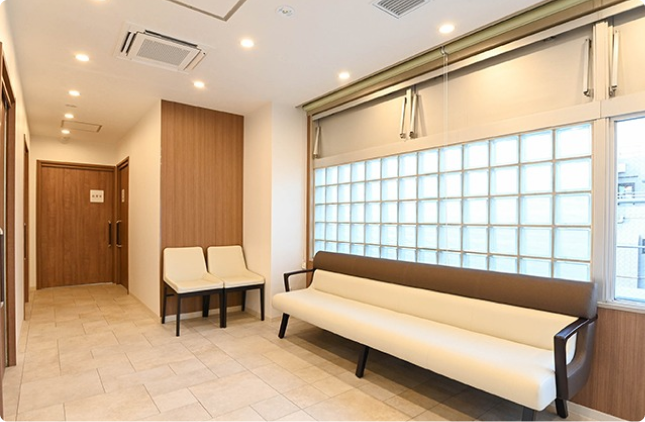
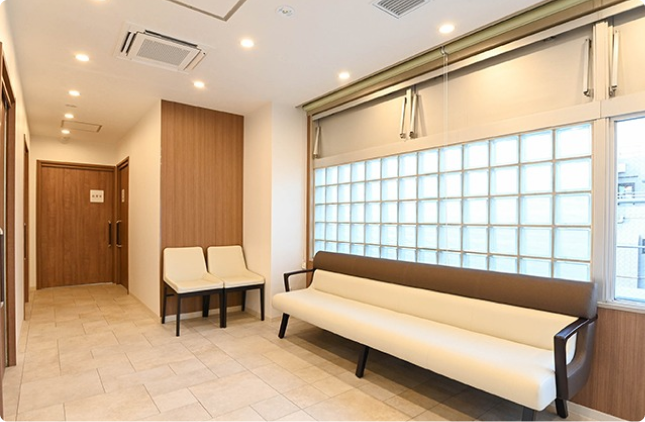
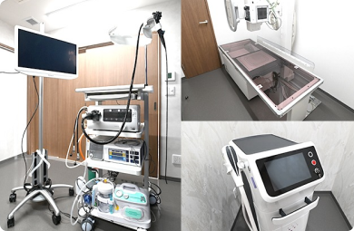
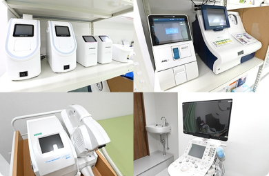
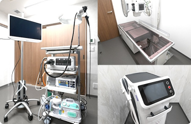
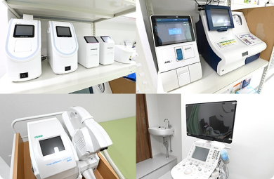

苦 し く な い
内視鏡検査
胃カメラ・大腸カメラ
専門医による
苦しくない内視鏡検査
検査実績：累計250件以上
同日検査/日帰り手術対応
東新宿・四谷の内視鏡・胃カメラ専門
総合内科おうえケアとわクリニック
| 診療時間 | 月 | 火 | 水 | 木 | 金 | 土 | 日/祝 |
|---|---|---|---|---|---|---|---|
| 9:00 - 13:00 | / | ||||||
| 15:00 - 19:00 | / | / | / | / |
土曜の診療は 9:00~14:00 まで
火曜は代診となります

苦しくない内視鏡検査を
スピーディーかつスムーズに
おうえケアとわクリニックでは、鎮静剤を用いた痛くない、苦しくない胃カメラ・大腸カメラ検査を実施しております。
また、お忙しい方がスピーディーかつスムーズに内視鏡検査をお受けいただけるよう、胃カメラと大腸カメラを同日に受けることも可能となっております。
胃カメラ
上部内視鏡検査
大腸カメラ
下部内視鏡検査
ピロリ菌検査
大腸ポリープ
切除
(日帰り)
 

 



胃カメラ
上部内視鏡検査
極細の管状で先端にカメラが付いたスコープを肛門から入れ、直腸〜盲腸まで観察する検査です。
胃カメラと同様に、鎮静剤や鎮痛剤を使用して、痛みや苦しさを極力抑えた検査を行なっており、大腸がん、潰瘍性大腸炎、大腸ポリープなどを発見できます。
大腸ポリープが発見された場合、日帰り手術でポリープを切除することも可能です。
- 慢性胃炎がある方
- 腹痛・呑酸・吐き気等の自覚症状が続く方
- みぞおちあたりが痛む方
- 胸につっかえ感がある方
- 酒やたばこをよくやる方
- バリウム検査で異常を指摘された方
料金・詳細を見る
大腸カメラ
下部内視鏡検査
極細の管状で先端にカメラが付いたスコープを肛門から入れ、直腸〜盲腸まで観察する検査です。
胃カメラと同様に、鎮静剤や鎮痛剤を使用して、痛みや苦しさを極力抑えた検査を行なっており、大腸がん、潰瘍性大腸炎、大腸ポリープなどを発見できます。
大腸ポリープが発見された場合、日帰り手術でポリープを切除することも可能です。
- 下痢がずっと続く方
- 便秘がずっと続く方
- 以前より便が細くなった方
- 血便が出た方
- 親族に大腸ガンを患った人がいる方
- 痔がある方
料金・詳細を見る
ピロリ菌検査
上部内視鏡検査では、ピロリ菌感染の有無も確認することができます。
ピロリ菌に感染していた場合は、抗生物質と胃酸分泌抑制薬を併用して、ピロリ菌を除菌する治療を行います。
- バリウム検査で胃炎が見つかった方
- 親族にピロリ菌感染者がいる方
- 胃炎がくりかえしおこる方
- 胃の不快感が続く方
- 食欲がない方
料金・詳細を見る
大腸ポリープ切除
(日帰り手術)
当院では、大腸カメラ検査で大腸ポリープが発見された際、その場で切除する日帰り手術をご提案しております。
患者様にできる限りご負担がかからないよう配慮したご提案と治療で、将来の大腸がん予防につなげます。
料金・詳細を見る

患者さまの心に寄り添い
笑顔と『ケア』を『とわ』に
おうえケアとわクリニック院長の麻植一孝（おうえ かずたか）です。
東京慈恵医科大学附属病院で、虫刺されや捻挫、風邪等の一般的な疾患から、重症外傷や重症感染症等の集中治療管理までの幅広い救急含めた疾患を研修医時含め約10年行ってきました。
おうえケアとわクリニックは、内視鏡検査(胃カメラ・大腸カメラ)を中心とし、さまざまな治療を扱う総合クリニックです。
内視鏡検査による、がん（胃がん・食道がん・十二指腸がん・大腸がん）の発見や、ポリープの発見・切除、ピロリ菌の検査・治療などを行い、患者様の将来の健康に貢献していきます。
病気の早期発見や予防ができるよう、患者さんが検査を受けやすい環境を整えておりますので、お気軽にご相談ください。
おうえケアとわクリニック
院長麻植 一孝

おうえケアとわクリニック
院長麻植 一孝
所属学会・保有資格
- 日本救急医学会
- 臨床救急医学会
- 日本中毒学会
- 日本消化器内視鏡学会
- 日本整形外科学会
- 日本救急医学会 救急科専門医
クリニック・医師紹介
胃・大腸の
よくある
疾患(病気)
胃や大腸に痛み・違和感を感じたら、それは病気のサインかもしれません。症状が長引く場合は、早めの受診・検査をおすすめします。
内視鏡検査の気になる
アレコレ！
内視鏡 2023.07.27
ここに記事タイトルが入りますここに記事タイトルが入りますここに記事タイトルが入...
内視鏡 2023.07.27
ここに記事タイトルが入りますここに記事タイトルが入りますここに記事タイトルが入...
内視鏡 2023.07.27
ここに記事タイトルが入りますここに記事タイトルが入りますここに記事タイトルが入...
コラム一覧へ
〒 162-0054
東京都新宿区河田町３−１０ 河田町安田ビル3階

03-6709-9725
| 診療時間 | 月 | 火 | 水 | 木 | 金 | 土 | 日/祝 |
|---|---|---|---|---|---|---|---|
| 9:00 - 13:00 | / | ||||||
| 15:00 - 19:00 | / | / | / | / |
休診：日曜/祝日
土曜の診療は 9:00~14:00 まで
火曜は代診となります
アクセス
都営新宿線「曙橋駅」
大江戸線「若松河田駅」
徒歩
6分